← 返回阅读库 · 原论文目录
论文讲解阅读文档 · 论文精读 · v226
“残差已死，新王当立”效能提升240%！MUDDFormer
视频时长 00:09:40；讲解文字 3,318 字符；提取讲解画面 269 张。按视频原顺序阅读，每段文字保留时间戳。
文字来自整段视频的自动语音转写，按自然停顿分段，并与 PPT / 论文页面 / 演示画面对齐。未将讲解压缩为摘要；术语、数字和口述公式请结合画面及原论文核对。 阅读稿已校正规范部分明确术语误识别；原始逐字稿和每处修改记录另行保留。
讲解画面为源视频截图（640×360），不是可编辑 PPT 文件。全片按每秒 2 帧扫描内容变化，逐步展开页保留；连续动画保留代表画面。清晰度受源视频限制。
下载完整资料包 · 含离线 HTML、PDF、Word、全部 PPT 画面和字幕。
原论文与材料
MUDDFormer: Breaking Residual Bottlenecks in Transformers via Multiway Dynamic Dense Connections · 下载完整 PDF（19 页）
按时间阅读
00:00:00–00:00:04 · 画面 001
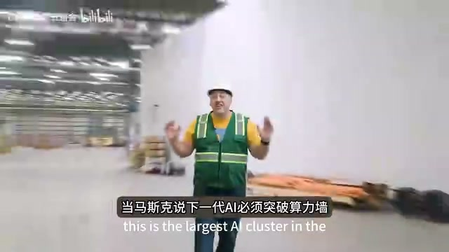
00:00:00–00:00:04 · 画面 001当马斯克说下一代 AI 必须突破算力墙，当谷歌微软还在卷万亿参数，中国的团队却发现 Transformer 的隐藏漏洞。何恺明大神于 2015 年发明的深度网络基石残差连接竟成了大模型的性能瓶颈。你是否想过为什么大模型的参数增加 10 倍，性能只提升两倍？这篇于 ICML 2025 最新发表的 MUDDFormer 揭示了大模型参数集体罢工的真相。
00:00:04–00:00:07 · 画面 002
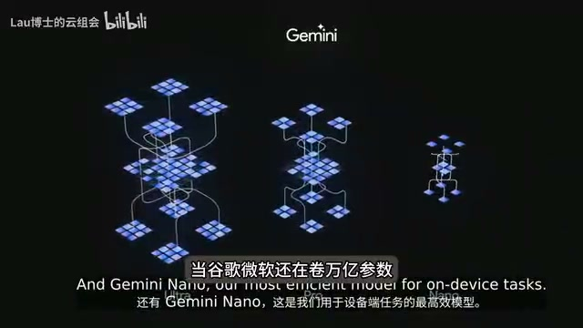
00:00:04–00:00:07 · 画面 00200:00:07–00:00:11 · 画面 003
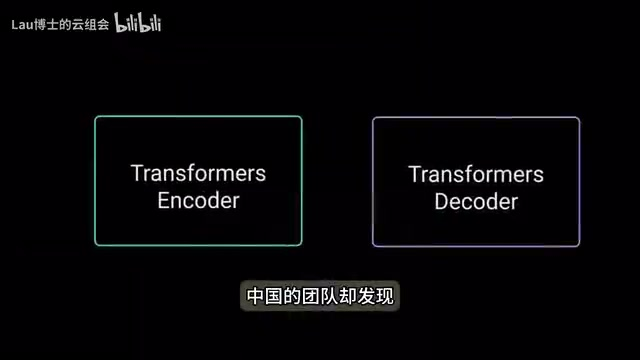
00:00:07–00:00:11 · 画面 00300:00:11–00:00:13 · 画面 004
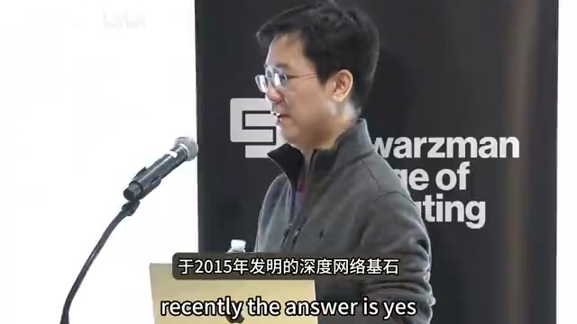
00:00:11–00:00:13 · 画面 00400:00:13–00:00:14 · 画面 005
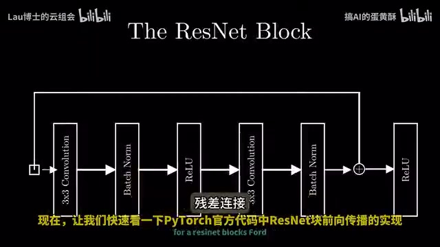
00:00:13–00:00:14 · 画面 00500:00:14–00:00:18 · 画面 006
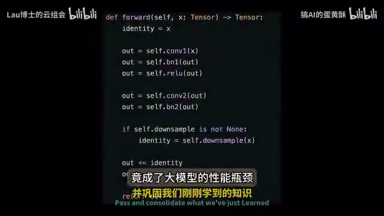
00:00:14–00:00:18 · 画面 00600:00:18–00:00:22 · 画面 007
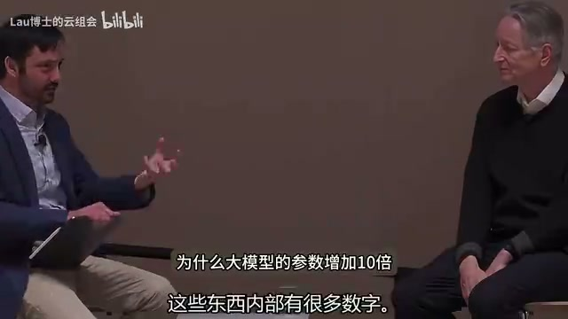
00:00:18–00:00:22 · 画面 00700:00:22–00:00:24 · 画面 008
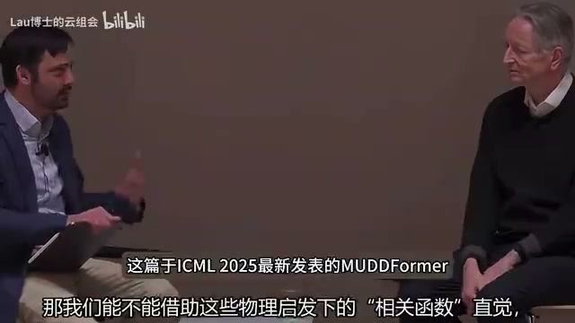
00:00:22–00:00:24 · 画面 00800:00:24–00:00:26 · 画面 009
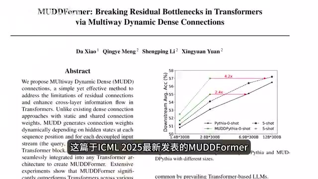
00:00:24–00:00:26 · 画面 00900:00:26–00:00:30 · 画面 010
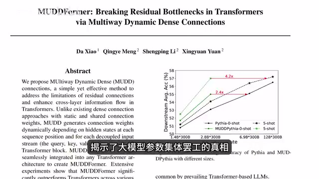
00:00:26–00:00:30 · 画面 010传统的 Transformer 的残差连接像早晚高峰的北五环，层数越深信息越堵车，后面的层数集体摸鱼躺平。而 MUDD 的架构构建起了层间逆交桥，用动态路由让每层自动选择最优的历史信息，让 28 亿小模型跑分连压 69 亿大模型。本期应而解读，看 MUDDFormer 如何改写信息传递法则，让密集连接重塑 AI 生态。
00:00:30–00:00:34 · 画面 011
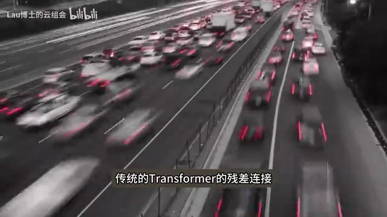
00:00:30–00:00:34 · 画面 01100:00:34–00:00:38 · 画面 012
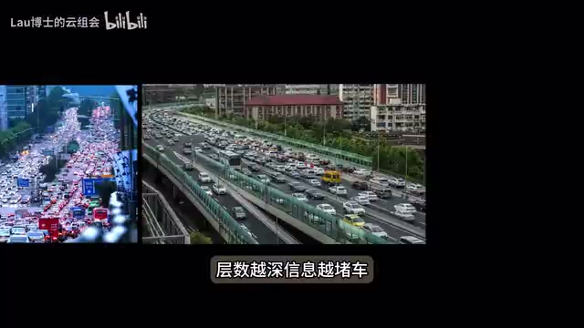
00:00:34–00:00:38 · 画面 01200:00:38–00:00:42 · 画面 013
00:00:38–00:00:42 · 画面 01300:00:42–00:00:45 · 画面 014
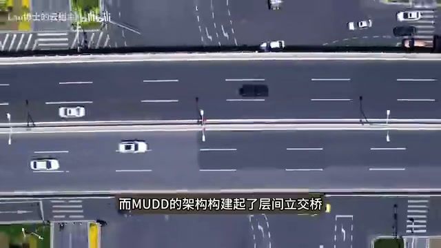
00:00:42–00:00:45 · 画面 01400:00:45–00:00:49 · 画面 015
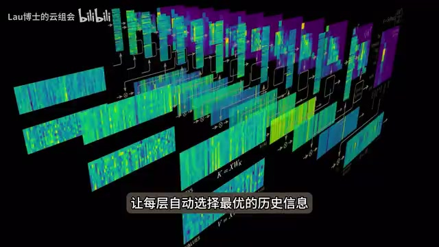
00:00:45–00:00:49 · 画面 01500:00:49–00:00:53 · 画面 016
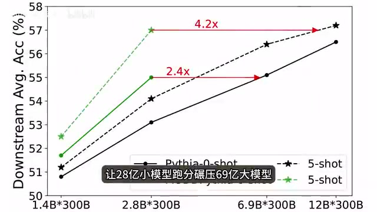
00:00:49–00:00:53 · 画面 01600:00:53–00:00:55 · 画面 017
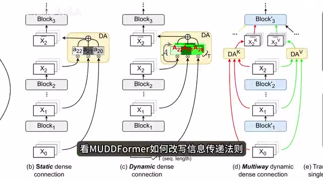
00:00:53–00:00:55 · 画面 01700:00:55–00:00:58 · 画面 018
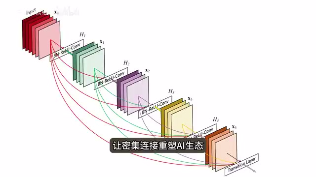
00:00:55–00:00:58 · 画面 018欢迎来到力武博士的云组会，我们每周都将至少有一篇高质量的论文精读发布出来。相信在一系列的论文学习以后，你就能成为人工智能领域的专家。那我们先快速回顾一下什么是残差网络，相信大家对于残差结构都不陌生。残差网络结构的出现解决了随着神经网络的加深而带来的模型退化的问题，那样深度神经网络了成为可能。
00:00:58–00:01:00 · 画面 019
00:00:58–00:01:00 · 画面 01900:01:00–00:01:01 · 画面 020
00:01:00–00:01:01 · 画面 02000:01:01–00:01:03 · 画面 021
00:01:01–00:01:03 · 画面 02100:01:03–00:01:04 · 画面 022
00:01:03–00:01:04 · 画面 02200:01:04–00:01:07 · 画面 023
00:01:04–00:01:07 · 画面 02300:01:07–00:01:11 · 画面 024
00:01:07–00:01:11 · 画面 02400:01:11–00:01:15 · 画面 025
00:01:11–00:01:15 · 画面 02500:01:15–00:01:18 · 画面 026
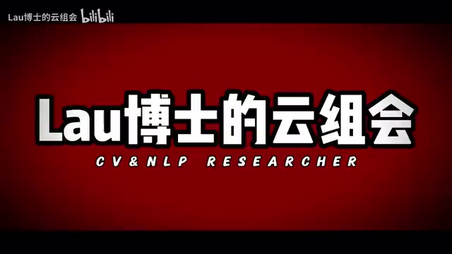
00:01:15–00:01:18 · 画面 02600:01:18–00:01:20 · 画面 027
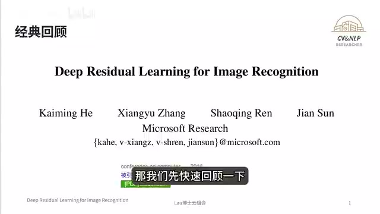
00:01:18–00:01:20 · 画面 02700:01:20–00:01:21 · 画面 028
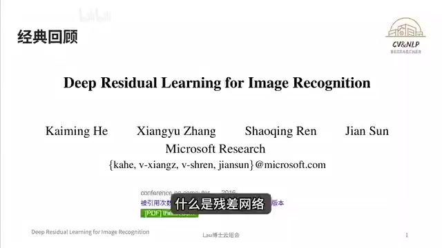
00:01:20–00:01:21 · 画面 02800:01:21–00:01:24 · 画面 029
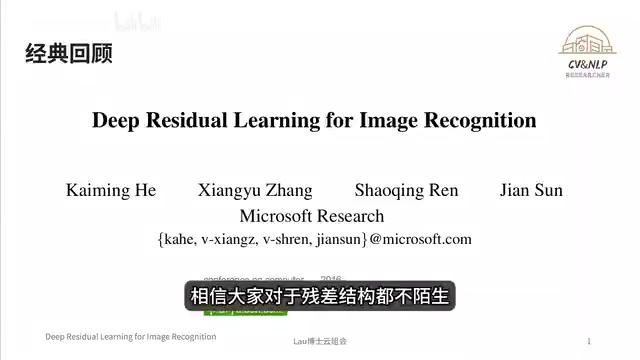
00:01:21–00:01:24 · 画面 02900:01:24–00:01:26 · 画面 030
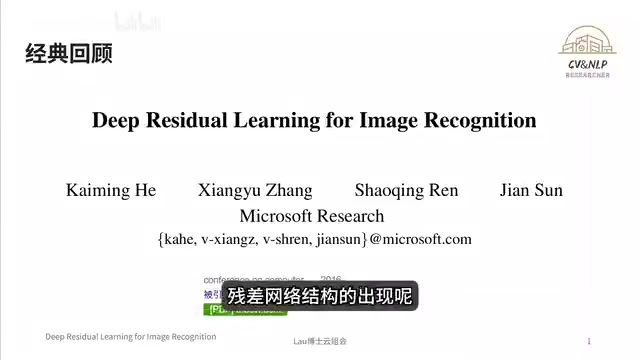
00:01:24–00:01:26 · 画面 03000:01:26–00:01:27 · 画面 031
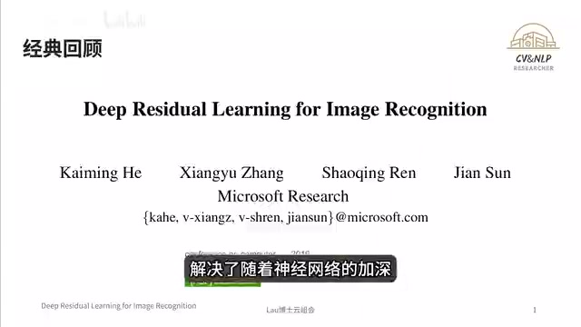
00:01:26–00:01:27 · 画面 03100:01:27–00:01:28 · 画面 032
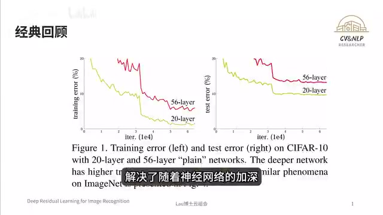
00:01:27–00:01:28 · 画面 03200:01:28–00:01:31 · 画面 033
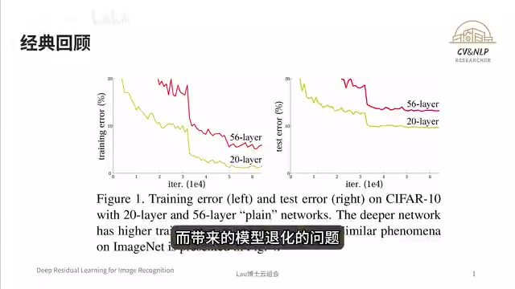
00:01:28–00:01:31 · 画面 03300:01:31–00:01:35 · 画面 034
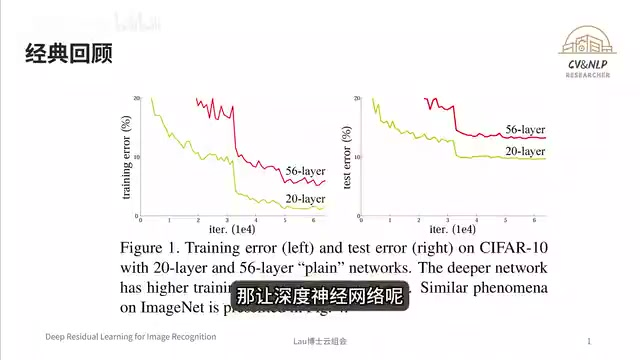
00:01:31–00:01:35 · 画面 034残差网络的结构非常简单，它就是把原始的映射 FX 重新映射成为 FX 加 X，就这么一个小小的连接让神经网络在图像分类等任务上面加深到 110 层依然能够在性能上有所提升，也成为了 Transformer 等一众大模型架构的基础。在很多的博客教程里面故事到这了就已经结束了，但是我们仔细看报告。
00:01:35–00:01:36 · 画面 035
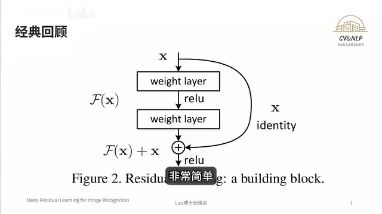
00:01:35–00:01:36 · 画面 03500:01:36–00:01:39 · 画面 036
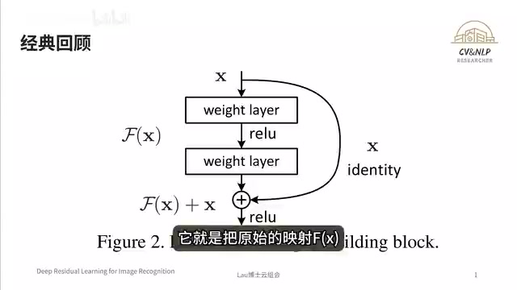
00:01:36–00:01:39 · 画面 03600:01:39–00:01:42 · 画面 037
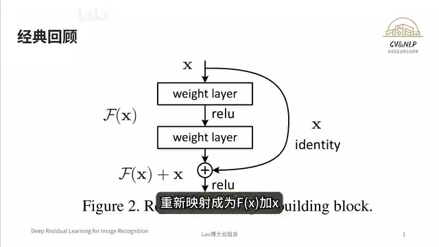
00:01:39–00:01:42 · 画面 03700:01:42–00:01:44 · 画面 038
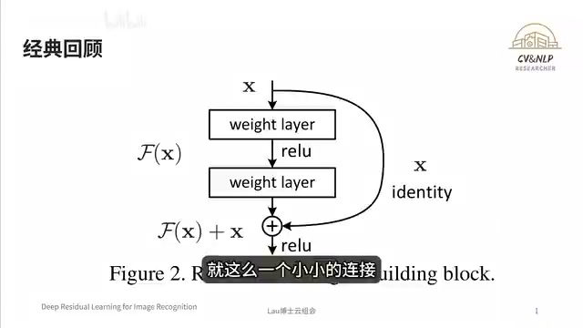
00:01:42–00:01:44 · 画面 03800:01:44–00:01:46 · 画面 039
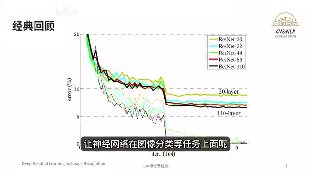
00:01:44–00:01:46 · 画面 03900:01:46–00:01:48 · 画面 040
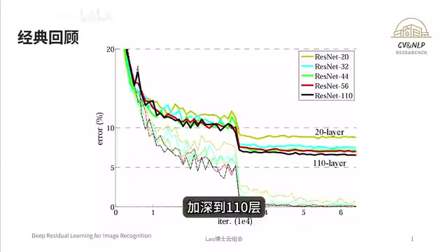
00:01:46–00:01:48 · 画面 04000:01:48–00:01:51 · 画面 041
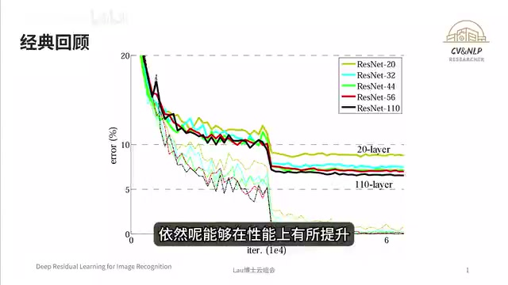
00:01:48–00:01:51 · 画面 04100:01:51–00:01:53 · 画面 042
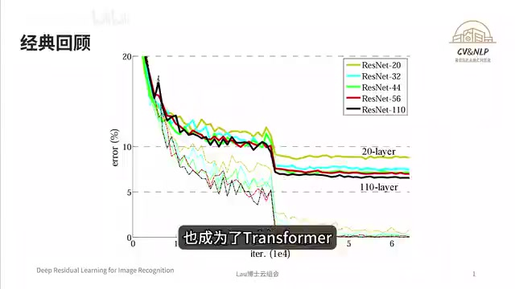
00:01:51–00:01:53 · 画面 04200:01:53–00:01:55 · 画面 043
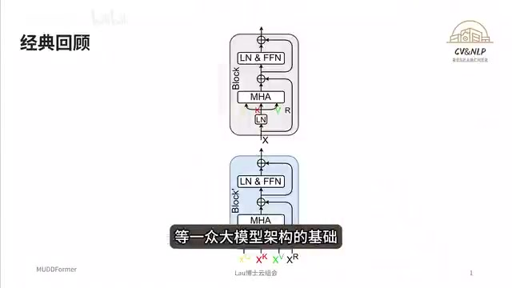
00:01:53–00:01:55 · 画面 04300:01:55–00:01:57 · 画面 044
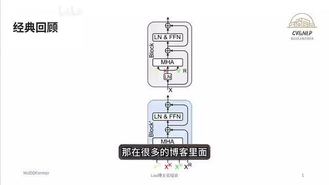
00:01:55–00:01:57 · 画面 04400:01:57–00:01:59 · 画面 045
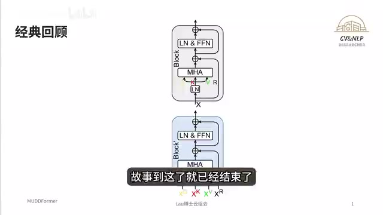
00:01:57–00:01:59 · 画面 04500:01:59–00:02:01 · 画面 046
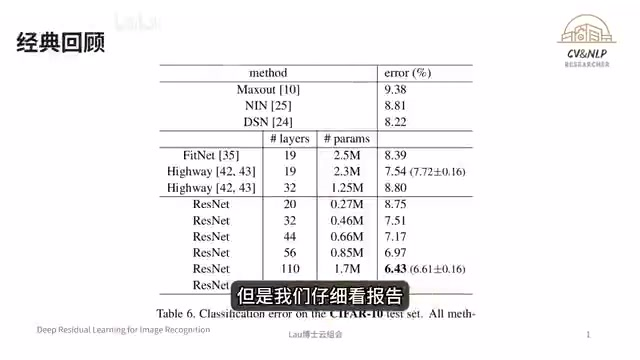
00:01:59–00:02:01 · 画面 046随着加深到 1202 层模型的性能就重新出现了退化现象，当然在原文里面被表达成其测试误差仍然表现得不错，但实际上错误率是上升了。有些人可能会觉得这不就是过拟合吗？但这篇论文并不认为是简单的过拟合，而是残差连接结构限制了大模型进一步的发挥。
00:02:01–00:02:04 · 画面 047
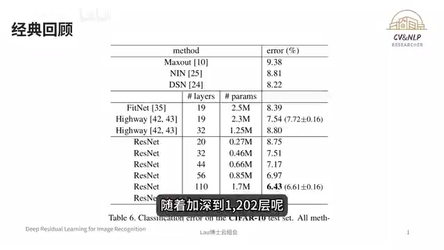
00:02:01–00:02:04 · 画面 04700:02:04–00:02:07 · 画面 048
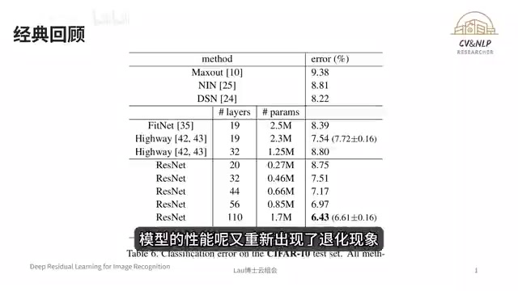
00:02:04–00:02:07 · 画面 04800:02:07–00:02:10 · 画面 049
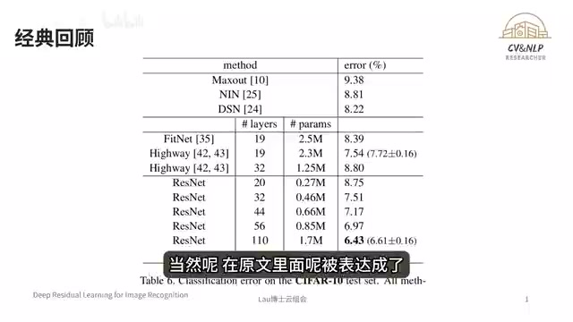
00:02:07–00:02:10 · 画面 04900:02:10–00:02:12 · 画面 050
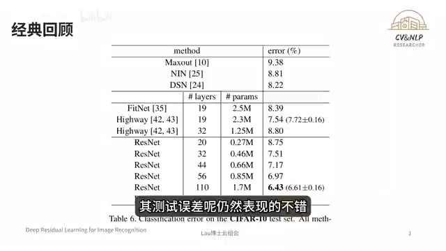
00:02:10–00:02:12 · 画面 05000:02:12–00:02:16 · 画面 051
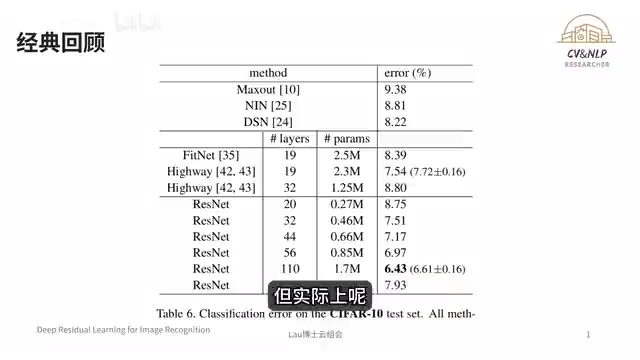
00:02:12–00:02:16 · 画面 05100:02:16–00:02:19 · 画面 052
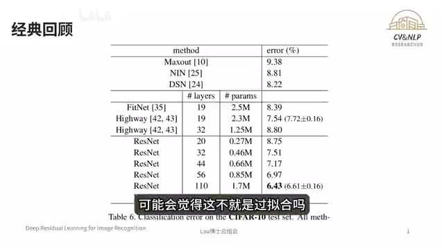
00:02:16–00:02:19 · 画面 05200:02:19–00:02:20 · 画面 053
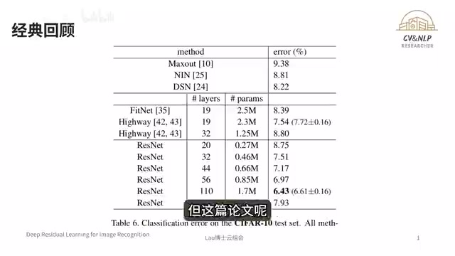
00:02:19–00:02:20 · 画面 05300:02:20–00:02:22 · 画面 054
00:02:20–00:02:22 · 画面 05400:02:22–00:02:23 · 画面 055
00:02:22–00:02:23 · 画面 05500:02:23–00:02:26 · 画面 056
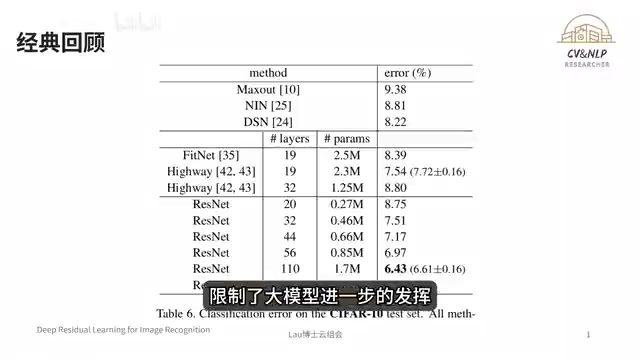
00:02:23–00:02:26 · 画面 056在这篇论文里面是用模型坍塌的角度来描述带有残差结构的深度网络退化的现象，而并非通过准确率或是误差来进行描述。在引言的第一段的尾巴作者就提到使用预归一化来训练的做法会导致模型坍塌，其中深层隐藏的特征会变得高度相似。对于流行的 LM 大部分的层都是可以移除，性能的损失是非常小的。
00:02:26–00:02:27 · 画面 057
00:02:26–00:02:27 · 画面 05700:02:27–00:02:29 · 画面 058
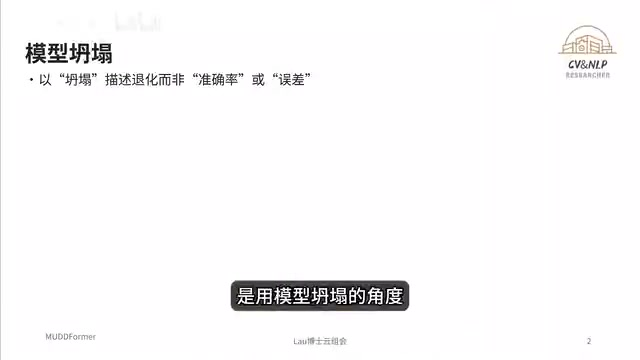
00:02:27–00:02:29 · 画面 05800:02:29–00:02:32 · 画面 059
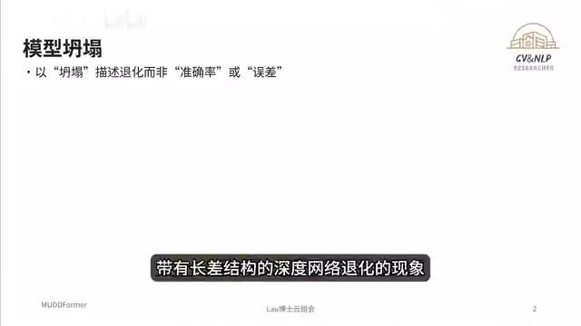
00:02:29–00:02:32 · 画面 05900:02:32–00:02:34 · 画面 060
00:02:32–00:02:34 · 画面 06000:02:34–00:02:36 · 画面 061
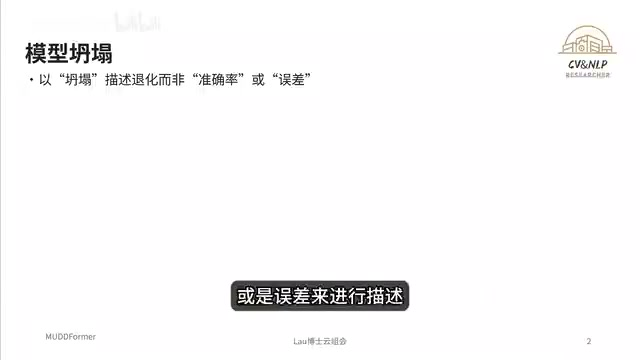
00:02:34–00:02:36 · 画面 06100:02:36–00:02:38 · 画面 062
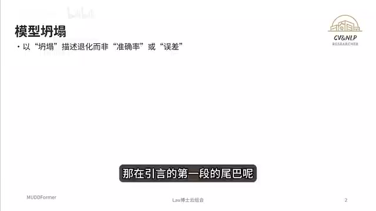
00:02:36–00:02:38 · 画面 06200:02:38–00:02:39 · 画面 063
00:02:38–00:02:39 · 画面 06300:02:39–00:02:41 · 画面 064
00:02:39–00:02:41 · 画面 06400:02:41–00:02:44 · 画面 065
00:02:41–00:02:44 · 画面 06500:02:44–00:02:46 · 画面 066
00:02:44–00:02:46 · 画面 06600:02:46–00:02:50 · 画面 067
00:02:46–00:02:50 · 画面 06700:02:50–00:02:51 · 画面 068
00:02:50–00:02:51 · 画面 06800:02:51–00:02:52 · 画面 069
00:02:51–00:02:52 · 画面 06900:02:52–00:02:55 · 画面 070
00:02:52–00:02:55 · 画面 070认为当较深的相邻的层具有高的相似度的时候就具备坍塌的性质，也就意味着性能的退化。其实从刚刚提到的引言来看，这篇文章是更强调结构上的高效设计。接下来会给大家进行详细的介绍。补充一点，在这个图里面有一个叫 Pythia 的模型，Pythia 它是一个开源的大语言模型的套件，它是基于 Transformer 的。
00:02:55–00:02:56 · 画面 071
00:02:55–00:02:56 · 画面 07100:02:56–00:02:58 · 画面 072
00:02:56–00:02:58 · 画面 07200:02:58–00:02:59 · 画面 073
00:02:58–00:02:59 · 画面 07300:02:59–00:03:01 · 画面 074
00:02:59–00:03:01 · 画面 07400:03:01–00:03:03 · 画面 075
00:03:01–00:03:03 · 画面 07500:03:03–00:03:06 · 画面 076
00:03:03–00:03:06 · 画面 07600:03:06–00:03:09 · 画面 077
00:03:06–00:03:09 · 画面 07700:03:09–00:03:13 · 画面 078
00:03:09–00:03:13 · 画面 07800:03:13–00:03:15 · 画面 079
00:03:13–00:03:15 · 画面 07900:03:15–00:03:16 · 画面 080
00:03:15–00:03:16 · 画面 08000:03:16–00:03:19 · 画面 081
00:03:16–00:03:19 · 画面 08100:03:19–00:03:20 · 画面 082
00:03:19–00:03:20 · 画面 08200:03:20–00:03:22 · 画面 083
00:03:20–00:03:22 · 画面 083从图中可以看到在 Layer 的 Index 比较大的时候没有使用 MUDD 的策略的 Pythia 它的值是更接近于 1 的，符合了先前提到的观点。接下来我们将以介绍 MUDDFormer 的核心 idea 以及实验分析为主导。
00:03:22–00:03:24 · 画面 084
00:03:22–00:03:24 · 画面 08400:03:24–00:03:26 · 画面 085
00:03:24–00:03:26 · 画面 08500:03:26–00:03:27 · 画面 086
00:03:26–00:03:27 · 画面 08600:03:27–00:03:31 · 画面 087
00:03:27–00:03:31 · 画面 08700:03:31–00:03:32 · 画面 088
00:03:31–00:03:32 · 画面 08800:03:32–00:03:35 · 画面 089
00:03:32–00:03:35 · 画面 08900:03:35–00:03:37 · 画面 090
00:03:35–00:03:37 · 画面 09000:03:37–00:03:38 · 画面 091
00:03:37–00:03:38 · 画面 09100:03:38–00:03:41 · 画面 092
00:03:38–00:03:41 · 画面 09200:03:41–00:03:44 · 画面 093
00:03:41–00:03:44 · 画面 093在第一章作者就提到 Transformer 架构中的残差连接虽然有效，但在深层的模型里面存在的瓶颈。密集连接 DenseNet 在一定程度上改善了 Transformer 的性能，但仍然存在着局限性。因此作者就提出了 MUDDFormer，通过动态深层连接的权重来增强跨层信息的流动。接下来我们将深入的探讨 MUDDFormer 的核心思想。
00:03:44–00:03:45 · 画面 094
00:03:44–00:03:45 · 画面 09400:03:45–00:03:47 · 画面 095
00:03:45–00:03:47 · 画面 09500:03:47–00:03:50 · 画面 096
00:03:47–00:03:50 · 画面 09600:03:50–00:03:51 · 画面 097
00:03:50–00:03:51 · 画面 09700:03:51–00:03:53 · 画面 098
00:03:51–00:03:53 · 画面 09800:03:53–00:03:56 · 画面 099
00:03:53–00:03:56 · 画面 09900:03:56–00:03:57 · 画面 100
00:03:56–00:03:57 · 画面 10000:03:57–00:03:58 · 画面 101
00:03:57–00:03:58 · 画面 10100:03:58–00:04:01 · 画面 102
00:03:58–00:04:01 · 画面 10200:04:01–00:04:04 · 画面 103
00:04:01–00:04:04 · 画面 10300:04:04–00:04:07 · 画面 104
00:04:04–00:04:07 · 画面 104说到这里再给不熟悉我们的同学介绍一下本频道六博士云组会的自律打造一站式人工智能交流平台用尽可能好理解的语言让每位同学都能了解 AI 最前沿的内容除了视频以外也欢迎大家加入云组会的知心球我们做了三件事第一系统性的拆解了热门领域的学习路线帮你的避开无效的努力第二每日更新精选文献解读
00:04:07–00:04:08 · 画面 105
00:04:07–00:04:08 · 画面 10500:04:08–00:04:10 · 画面 106
00:04:08–00:04:10 · 画面 10600:04:10–00:04:12 · 画面 107
00:04:10–00:04:12 · 画面 10700:04:12–00:04:15 · 画面 108
00:04:12–00:04:15 · 画面 10800:04:15–00:04:17 · 画面 109
00:04:15–00:04:17 · 画面 10900:04:17–00:04:18 · 画面 110
00:04:17–00:04:18 · 画面 11000:04:18–00:04:21 · 画面 111
00:04:18–00:04:21 · 画面 11100:04:21–00:04:22 · 画面 112
00:04:21–00:04:22 · 画面 11200:04:22–00:04:25 · 画面 113
00:04:22–00:04:25 · 画面 11300:04:25–00:04:27 · 画面 114
00:04:25–00:04:27 · 画面 11400:04:27–00:04:30 · 画面 115
00:04:27–00:04:30 · 画面 11500:04:30–00:04:32 · 画面 116
00:04:30–00:04:32 · 画面 11600:04:32–00:04:34 · 画面 117
00:04:32–00:04:34 · 画面 11700:04:34–00:04:36 · 画面 118
00:04:34–00:04:36 · 画面 118省去 80%的检索时间三建立专家学者交流群不定期掉落福利直接与专家学者互动交流深度参与选题云组会欢迎各位同学的加入想要快速的了解 MUDDFormer 我们只需要看图一是一个标准的 Transformer 模块有一个多头注意力的模块以及一个全连接前馈网络组成具备残差结构
00:04:36–00:04:38 · 画面 119
00:04:36–00:04:38 · 画面 11900:04:38–00:04:41 · 画面 120
00:04:38–00:04:41 · 画面 12000:04:41–00:04:42 · 画面 121
00:04:41–00:04:42 · 画面 12100:04:42–00:04:44 · 画面 122
00:04:42–00:04:44 · 画面 12200:04:44–00:04:46 · 画面 123
00:04:44–00:04:46 · 画面 12300:04:46–00:04:48 · 画面 124
00:04:46–00:04:48 · 画面 12400:04:48–00:04:49 · 画面 125
00:04:48–00:04:49 · 画面 12500:04:49–00:04:51 · 画面 126
00:04:49–00:04:51 · 画面 12600:04:51–00:04:54 · 画面 127
00:04:51–00:04:54 · 画面 12700:04:54–00:04:56 · 画面 128
00:04:54–00:04:56 · 画面 12800:04:56–00:04:59 · 画面 129
00:04:56–00:04:59 · 画面 12900:04:59–00:05:00 · 画面 130
00:04:59–00:05:00 · 画面 130接下来我们从 A 到 D 看是如何一步一步从 Dense 到 Multiway 的进化。A 图就展示了一个密集连接的 Transformer 的结构，可以看出 X0 是后面所有 Block 的输入，后面的内容是同理的。B 相比 A 多了 DA 深度聚合模块，DA 模块通过对输入去加权求和来聚合前层的输出。C 相比 B
00:05:00–00:05:01 · 画面 131
00:05:00–00:05:01 · 画面 13100:05:01–00:05:03 · 画面 132
00:05:01–00:05:03 · 画面 13200:05:03–00:05:07 · 画面 133
00:05:03–00:05:07 · 画面 13300:05:07–00:05:10 · 画面 134
00:05:07–00:05:10 · 画面 13400:05:10–00:05:12 · 画面 135
00:05:10–00:05:12 · 画面 13500:05:12–00:05:13 · 画面 136
00:05:12–00:05:13 · 画面 13600:05:13–00:05:14 · 画面 137
00:05:13–00:05:14 · 画面 13700:05:14–00:05:16 · 画面 138
00:05:14–00:05:16 · 画面 13800:05:16–00:05:18 · 画面 139
00:05:16–00:05:18 · 画面 13900:05:18–00:05:19 · 画面 140
00:05:18–00:05:19 · 画面 14000:05:19–00:05:20 · 画面 141
00:05:19–00:05:20 · 画面 14100:05:20–00:05:21 · 画面 142
00:05:20–00:05:21 · 画面 14200:05:21–00:05:25 · 画面 143
00:05:21–00:05:25 · 画面 14300:05:25–00:05:26 · 画面 144
00:05:25–00:05:26 · 画面 14400:05:26–00:05:29 · 画面 145
00:05:26–00:05:29 · 画面 14500:05:29–00:05:31 · 画面 146
00:05:29–00:05:31 · 画面 14600:05:31–00:05:32 · 画面 147
00:05:31–00:05:32 · 画面 14700:05:32–00:05:34 · 画面 148
00:05:32–00:05:34 · 画面 148DA 模块当中的权重是动态的，通过多层的感知器实现了动态权重
00:05:34–00:05:36 · 画面 149
00:05:34–00:05:36 · 画面 14900:05:36–00:05:38 · 画面 150
00:05:36–00:05:38 · 画面 15000:05:38–00:05:40 · 画面 151
00:05:38–00:05:40 · 画面 151D 相比 C 就多了更多的旁路了，实际上它就是把输入解耦成了 XQ、XK、XV 以及 XR，在力度的表现上面它就显得更细了。所以到这里大家就会发现，实际上这个方法总体上依然是基于残差以及密集连接的。接下来我们来看实验的部分，在实验部分作者就展示 MUDDFormer 在语言模型、预训练和下游任务上面的性能
00:05:40–00:05:42 · 画面 152
00:05:40–00:05:42 · 画面 15200:05:42–00:05:43 · 画面 153
00:05:42–00:05:43 · 画面 15300:05:43–00:05:44 · 画面 154
00:05:43–00:05:44 · 画面 15400:05:44–00:05:47 · 画面 155
00:05:44–00:05:47 · 画面 15500:05:47–00:05:49 · 画面 156
00:05:47–00:05:49 · 画面 15600:05:49–00:05:50 · 画面 157
00:05:49–00:05:50 · 画面 15700:05:50–00:05:52 · 画面 158
00:05:50–00:05:52 · 画面 15800:05:52–00:05:54 · 画面 159
00:05:52–00:05:54 · 画面 15900:05:54–00:05:55 · 画面 160
00:05:54–00:05:55 · 画面 16000:05:55–00:05:57 · 画面 161
00:05:55–00:05:57 · 画面 16100:05:57–00:05:59 · 画面 162
00:05:57–00:05:59 · 画面 16200:05:59–00:06:01 · 画面 163
00:05:59–00:06:01 · 画面 16300:06:01–00:06:02 · 画面 164
00:06:01–00:06:02 · 画面 16400:06:02–00:06:04 · 画面 165
00:06:02–00:06:04 · 画面 16500:06:04–00:06:07 · 画面 166
00:06:04–00:06:07 · 画面 166图 3 就展示了不同模型大小的验证损失的曲线可以看出 MUDDFormer 在各种的模型的架构和规模上面都要优于 Transformer 性能的提升相当于是使用了 1.8 倍到 2.4 倍的计算资源的 Transformer
00:06:07–00:06:08 · 画面 167
00:06:07–00:06:08 · 画面 16700:06:08–00:06:12 · 画面 168
00:06:08–00:06:12 · 画面 16800:06:12–00:06:13 · 画面 169
00:06:12–00:06:13 · 画面 16900:06:13–00:06:16 · 画面 170
00:06:13–00:06:16 · 画面 17000:06:16–00:06:18 · 画面 171
00:06:16–00:06:18 · 画面 17100:06:18–00:06:19 · 画面 172
00:06:18–00:06:19 · 画面 17200:06:19–00:06:20 · 画面 173
00:06:19–00:06:20 · 画面 17300:06:20–00:06:24 · 画面 174
00:06:20–00:06:24 · 画面 17400:06:24–00:06:25 · 画面 175
00:06:24–00:06:25 · 画面 175那图 4 呢就展示了深度缩放验证损失的曲线，那进一步验证了 MUDDFormer 在深度扩展性上面的优势。那在第三章的分析跟理解的部分呢，作者就通过实验的结果解释了 MUDDFormer 为什么有效。那图 7 呢，我们可以看到是 Transformer 跟 MUDDFormer 的 V Composition 的一个示意图。那可以看出，MUDDFormer 的连接呢，它是通过解耦输入
00:06:25–00:06:26 · 画面 176
00:06:25–00:06:26 · 画面 17600:06:26–00:06:29 · 画面 177
00:06:26–00:06:29 · 画面 17700:06:29–00:06:30 · 画面 178
00:06:29–00:06:30 · 画面 17800:06:30–00:06:34 · 画面 179
00:06:30–00:06:34 · 画面 17900:06:34–00:06:37 · 画面 180
00:06:34–00:06:37 · 画面 18000:06:37–00:06:38 · 画面 181
00:06:37–00:06:38 · 画面 18100:06:38–00:06:40 · 画面 182
00:06:38–00:06:40 · 画面 18200:06:40–00:06:42 · 画面 183
00:06:40–00:06:42 · 画面 18300:06:42–00:06:43 · 画面 184
00:06:42–00:06:43 · 画面 18400:06:43–00:06:46 · 画面 185
00:06:43–00:06:46 · 画面 18500:06:46–00:06:49 · 画面 186
00:06:46–00:06:49 · 画面 18600:06:49–00:06:52 · 画面 187
00:06:49–00:06:52 · 画面 187各个流并为了每个流提供了专门的密集连接增强了跨层信息的流动图 8 呢就展示了每层的注意力头的激活比率可以看到 MUDDFormer 在深层的模型里面激活更多的注意力头提高了模型的上下文的学习能力
00:06:52–00:06:54 · 画面 188
00:06:52–00:06:54 · 画面 18800:06:54–00:06:57 · 画面 189
00:06:54–00:06:57 · 画面 18900:06:57–00:06:58 · 画面 190
00:06:57–00:06:58 · 画面 19000:06:58–00:07:02 · 画面 191
00:06:58–00:07:02 · 画面 19100:07:02–00:07:03 · 画面 192
00:07:02–00:07:03 · 画面 19200:07:03–00:07:05 · 画面 193
00:07:03–00:07:05 · 画面 19300:07:05–00:07:07 · 画面 194
00:07:05–00:07:07 · 画面 19400:07:07–00:07:10 · 画面 195
00:07:07–00:07:10 · 画面 195这些分析的结果表明，MUDDFormer 连接不仅仅是增强了跨层信息的流动，还提高了模型的表达能力和上下文的学习能力。接下来我们通过效率分析来评估 MUDDFormer 在训练和推理时间上面的效率
00:07:10–00:07:12 · 画面 196
00:07:10–00:07:12 · 画面 19600:07:12–00:07:14 · 画面 197
00:07:12–00:07:14 · 画面 19700:07:14–00:07:17 · 画面 198
00:07:14–00:07:17 · 画面 19800:07:17–00:07:19 · 画面 199
00:07:17–00:07:19 · 画面 19900:07:19–00:07:21 · 画面 200
00:07:19–00:07:21 · 画面 20000:07:21–00:07:23 · 画面 201
00:07:21–00:07:23 · 画面 20100:07:23–00:07:24 · 画面 202
00:07:23–00:07:24 · 画面 20200:07:24–00:07:28 · 画面 203
00:07:24–00:07:28 · 画面 20300:07:28–00:07:29 · 画面 204
00:07:28–00:07:29 · 画面 204那在表示里面就展示了训练的吞吐量以及推理的速度的进行比较。那可以看出来，MUDDFormer 在训练时的吞吐量是要略低于 Transformer 的，但性能的提升是显著的。那在推理的时候，MUDDFormer 的速度也是要略低于 Transformer，但仍然是在可以接受的范围里面
00:07:29–00:07:30 · 画面 205
00:07:29–00:07:30 · 画面 20500:07:30–00:07:32 · 画面 206
00:07:30–00:07:32 · 画面 20600:07:32–00:07:34 · 画面 207
00:07:32–00:07:34 · 画面 20700:07:34–00:07:36 · 画面 208
00:07:34–00:07:36 · 画面 20800:07:36–00:07:37 · 画面 209
00:07:36–00:07:37 · 画面 20900:07:37–00:07:39 · 画面 210
00:07:37–00:07:39 · 画面 21000:07:39–00:07:42 · 画面 211
00:07:39–00:07:42 · 画面 21100:07:42–00:07:43 · 画面 212
00:07:42–00:07:43 · 画面 21200:07:43–00:07:46 · 画面 213
00:07:43–00:07:46 · 画面 21300:07:46–00:07:49 · 画面 214
00:07:46–00:07:49 · 画面 214在第四章的相关工作部分作者就回顾了和 MUDDFormer 相关的研究工作很多种方法被提出来是增强 Transformer 增的残差连接比如像 DenseNet、DenseFormer 和 Hyper 的
00:07:49–00:07:51 · 画面 215
00:07:49–00:07:51 · 画面 21500:07:51–00:07:52 · 画面 216
00:07:51–00:07:52 · 画面 21600:07:52–00:07:54 · 画面 217
00:07:52–00:07:54 · 画面 21700:07:54–00:07:56 · 画面 218
00:07:54–00:07:56 · 画面 21800:07:56–00:07:59 · 画面 219
00:07:56–00:07:59 · 画面 21900:07:59–00:08:00 · 画面 220
00:07:59–00:08:00 · 画面 22000:08:00–00:08:01 · 画面 221
00:08:00–00:08:01 · 画面 22100:08:01–00:08:04 · 画面 222
00:08:01–00:08:04 · 画面 222connection 等等。那这些方法通过引入了密集连接或是动态权重来增强跨层的信息流动。那一些研究的探索了跨层的注意力机制，那用更加灵活的方式检索或更新不同层的表示。那另外呢，许多的研究啊也尝试通过改进单个层的架构来增强 Transformer 的性能或者是效率，比如像
00:08:04–00:08:06 · 画面 223
00:08:04–00:08:06 · 画面 22300:08:06–00:08:07 · 画面 224
00:08:06–00:08:07 · 画面 22400:08:07–00:08:09 · 画面 225
00:08:07–00:08:09 · 画面 22500:08:09–00:08:10 · 画面 226
00:08:09–00:08:10 · 画面 22600:08:10–00:08:12 · 画面 227
00:08:10–00:08:12 · 画面 22700:08:12–00:08:15 · 画面 228
00:08:12–00:08:15 · 画面 22800:08:15–00:08:17 · 画面 229
00:08:15–00:08:17 · 画面 22900:08:17–00:08:19 · 画面 230
00:08:17–00:08:19 · 画面 23000:08:19–00:08:22 · 画面 231
00:08:19–00:08:22 · 画面 23100:08:22–00:08:25 · 画面 232
00:08:22–00:08:25 · 画面 23200:08:25–00:08:27 · 画面 233
00:08:25–00:08:27 · 画面 233注意力机制、线性注意力或者是 IMSSM 的架构。那这些研究跟 MUDDFormer 的目标是一样的，就是通过改进跨层通信来增强 Transformer 的性能。MUDDFormer 通过动态生成连接的权重和解耦数据流，进一步的提升了跨层信息流动的效率以及表达能力。接下来我们将总结 MUDDFormer 的主要贡献以及 Future Work
00:08:27–00:08:30 · 画面 234
00:08:27–00:08:30 · 画面 23400:08:30–00:08:31 · 画面 235
00:08:30–00:08:31 · 画面 23500:08:31–00:08:33 · 画面 236
00:08:31–00:08:33 · 画面 23600:08:33–00:08:35 · 画面 237
00:08:33–00:08:35 · 画面 23700:08:35–00:08:37 · 画面 238
00:08:35–00:08:37 · 画面 23800:08:37–00:08:41 · 画面 239
00:08:37–00:08:41 · 画面 23900:08:41–00:08:42 · 画面 240
00:08:41–00:08:42 · 画面 24000:08:42–00:08:43 · 画面 241
00:08:42–00:08:43 · 画面 24100:08:43–00:08:45 · 画面 242
00:08:43–00:08:45 · 画面 24200:08:45–00:08:48 · 画面 243
00:08:45–00:08:48 · 画面 24300:08:48–00:08:50 · 画面 244
00:08:48–00:08:50 · 画面 24400:08:50–00:08:52 · 画面 245
00:08:50–00:08:52 · 画面 245第五章 结论与展望的部分，作者总结了 MUDDFormer 的主要贡献以及未来的研究方向。MUDDFormer 通过动态生成连接的权重和解耦输入流，显著提升了 Transformer 的性能。虽然 MUDDFormer 在训练和推理时的效率是要略低于 Transformer 的，但性能的提升非常显著
00:08:52–00:08:54 · 画面 246
00:08:52–00:08:54 · 画面 24600:08:54–00:08:57 · 画面 247
00:08:54–00:08:57 · 画面 24700:08:57–00:08:59 · 画面 248
00:08:57–00:08:59 · 画面 24800:08:59–00:09:01 · 画面 249
00:08:59–00:09:01 · 画面 24900:09:01–00:09:02 · 画面 250
00:09:01–00:09:02 · 画面 25000:09:02–00:09:05 · 画面 251
00:09:02–00:09:05 · 画面 25100:09:05–00:09:07 · 画面 252
00:09:05–00:09:07 · 画面 25200:09:07–00:09:09 · 画面 253
00:09:07–00:09:09 · 画面 25300:09:09–00:09:11 · 画面 254
00:09:09–00:09:11 · 画面 254而且可以通过稀疏连接的模式进行优化。未来的工作可以探索 MUDD 的连接与其他架构的创新结合，进一步提升 Transformer 的性能和效率。另外，MUDD 的连接的多路设计可能有助于产生更多更结构化的注意力机制，为 Transformer 的机制的可解释性的研究提供新的视角。以上是本期视频的全部内容，欢迎关注六博士的云组会，成为人工智能领域的专家
00:09:11–00:09:13 · 画面 255
00:09:11–00:09:13 · 画面 25500:09:13–00:09:14 · 画面 256
00:09:13–00:09:14 · 画面 25600:09:14–00:09:17 · 画面 257
00:09:14–00:09:17 · 画面 25700:09:17–00:09:18 · 画面 258
00:09:17–00:09:18 · 画面 25800:09:18–00:09:19 · 画面 259
00:09:18–00:09:19 · 画面 25900:09:19–00:09:22 · 画面 260
00:09:19–00:09:22 · 画面 26000:09:22–00:09:24 · 画面 261
00:09:22–00:09:24 · 画面 26100:09:24–00:09:27 · 画面 262
00:09:24–00:09:27 · 画面 26200:09:27–00:09:29 · 画面 263
00:09:27–00:09:29 · 画面 26300:09:29–00:09:32 · 画面 264
00:09:29–00:09:32 · 画面 26400:09:32–00:09:34 · 画面 265
00:09:32–00:09:34 · 画面 26500:09:34–00:09:36 · 画面 266
00:09:34–00:09:36 · 画面 26600:09:36–00:09:38 · 画面 267
00:09:36–00:09:38 · 画面 26700:09:38–00:09:39 · 画面 268
00:09:38–00:09:39 · 画面 26800:09:39–00:09:40 · 画面 269
00:09:39–00:09:40 · 画面 269转写与来源说明 · 0 个自动复核提示
保留 24 个原始语音片段，0 个片段触发自动复核提示。提示仅用于定位可能的术语、重复或识别问题，不等于已确认错误。
讲解画面为源视频截图（640×360），不是可编辑 PPT 文件。全片按每秒 2 帧扫描内容变化，逐步展开页保留；连续动画保留代表画面。清晰度受源视频限制。
原视频：paper/合集_2026-10-16_论文精读/“残差已死，新王当立”效能提升240%！MUDDFormer【论文精读】.mp4
SHA-256：35e001b3389ee5fa12263f8dcbe6958bc10df225b9a680b72acdbb5f46651a71
全文按视频语音与画面制作。原论文可从上方链接下载；完整资料包保留全文、原始逐字稿、字幕和校对记录。